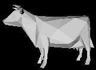
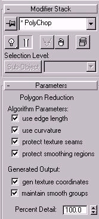

|
Discussions, papers, and pictures are nice, but they dont deliver technology in its most useful form. For those who are interested in trying out polygon reduction, we have provided a polygon reduction modifier plugin for Kinetix 3D Studio Max. The software available here is not a commercially supported product. However, I have already received lots of good feedback on this version. However, 3ds max now includes a good mesh simplification tool called multi-res. I’ve kept this web page mostly for reference reasons. To get the plugin, download: polychop42.zip 3DS Max 4.2 (special thanks to David Wulff for updating the code, project .dsp file, and compiling the new plugin file polychop42.dlm) pcp_code.zip Source code - if you ever want to experiment with your own mesh simplification metrics or add other features. (be sure to grab the new changes out of the 4.2 version too) Unzip the file and copy POLYCHOP. We all hate those needlessly large vrml files. So be sure to do your part and reduce the amount of bull out there on the world wide web:  Special thanks to Bioware, UofA Graphics Group, and Justin Smith for contributions to development of this software. |
 |
As mentioned, this version isn't perfect. Some of the things to note: